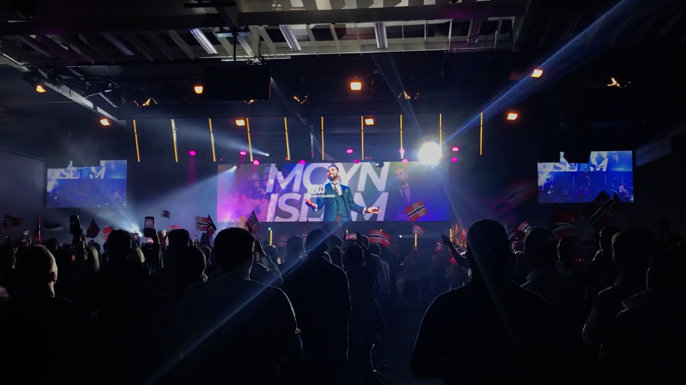
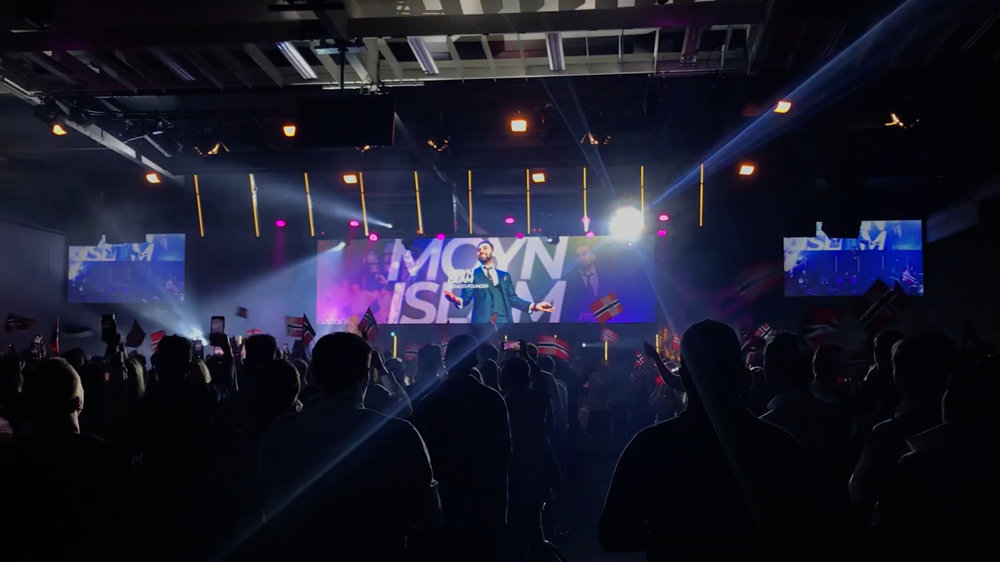
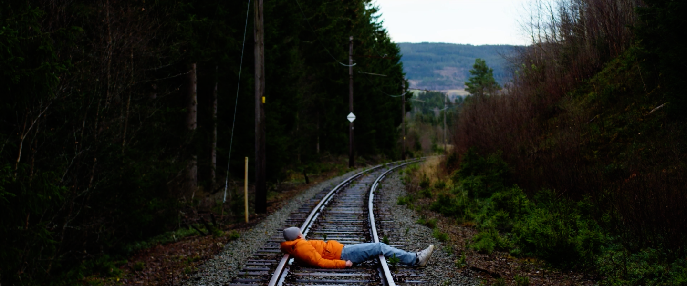
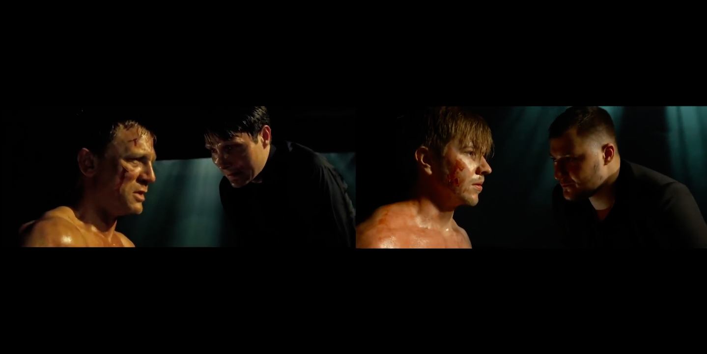
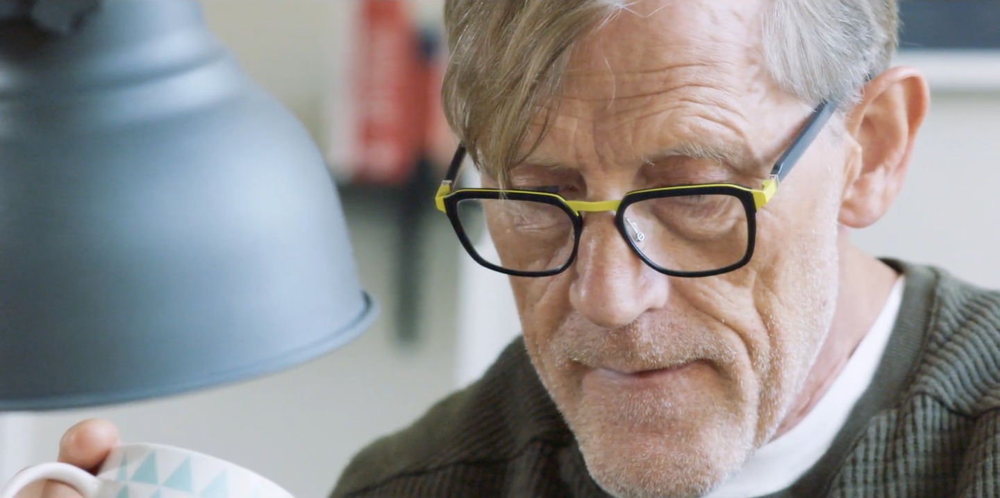
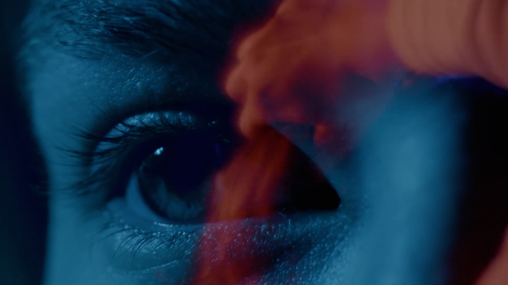
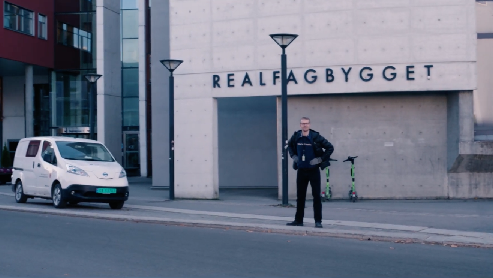

Kortfilm
NTNU-bachelorfilm produsert våren 2024, med meg som 'director of photography' og colorist. Filmen handler om et par som bærer en sofa til leiligheten de skal flytte inn i. Men undeveis finner de ut at de kanskje ikke er klare for å bo sammen enda.
 

NTNU-eksamensfilm produsert høsten 2022, med meg som filmfotograf, klipper og colorist. Filmen handler om 25 år gamle Magnus, som nylig har blitt med i et teknologiselskap som mistenkes å være et pyramidespill.

En Skeptisk Film produksjon fra våren 2023, med meg som regissør og klipper. Filmen handler om en deprimert ungdom som venter på å bli påkjørt av et tog, men ting går ikke helt som planlagt når toget er forsinket.

NTNU-øvingsoppgave produsert våren 2022, med meg som regissør og klipper. Oppgaven gikk ut på å etter beste evne kopiere en allerede laget filmsekvens. Jeg valgte i den anledning å plagiere en kjent scene fra Casino Royale.

NTNU-eksamensfilm produsert våren 2022, med meg som DOP og klipper. Filmen kom inn på Minimalen samme år og handler om forfatteren Magne som lider av skrivesperre, inntil han møter den nye naboen.

NTNU-øvingsoppgave produsert i forbindelse med et dokumentaremne høsten 2022, med meg som regissør, DOP og klipper. Den handler om hvordan det er å "bo" i en kvinnekropp.

Tre TikTok-filmer produsert i forbindelse med emnet Entreprenørskap og nyskaping i praktisk-estetiske fag høsten 2023, med meg som regissør, manusforfatter, DOP og klipper.